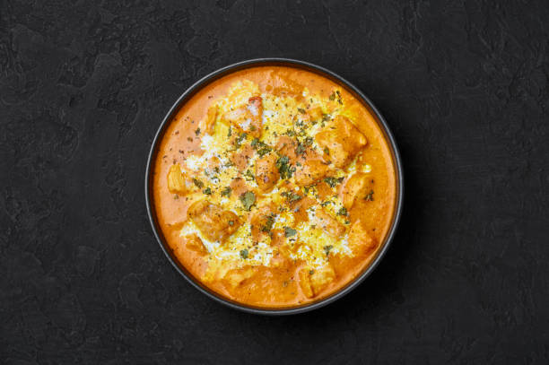

Home
Butter Chicken

Description
One of the most loved dishes in Indian cuisine. Tender marinated chicken
is simmered in a smooth, mildly spiced tomato and butter sauce finished
with cream.
Serve it with warm naan or basmati rice. The sauce is rich but not too
spicy, so it suits almost everyone.
Ingredients
- 600g boneless chicken thighs, cut into pieces
- 1/2 cup plain yogurt
- 1 tablespoon lemon juice
- 2 teaspoons garam masala, divided
- 1 teaspoon chilli powder
- 1 teaspoon turmeric powder
- 3 tablespoons butter
- 1 large onion, finely chopped
- 1 tablespoon ginger-garlic paste
- 1 1/2 cups tomato puree
- 1/2 cup heavy cream
- 1 teaspoon sugar
- Salt, to taste
- Fresh coriander, chopped, for garnish
Steps
- Mix the chicken with the yogurt, lemon juice, 1 teaspoon garam masala, chilli powder, turmeric and a pinch of salt. Marinate for at least 30 minutes.
- Melt 1 tablespoon of butter in a large pan and cook the chicken in batches until browned. Set aside.
- In the same pan, melt the remaining butter and cook the onion for 5 to 6 minutes until soft and golden.
- Add the ginger-garlic paste and cook for 1 minute.
- Stir in the tomato puree and simmer for 10 minutes, until the sauce thickens.
- Blend the sauce until smooth (optional), then return it to the pan.
- Add the chicken, remaining garam masala, sugar and salt. Simmer for 10 to 15 minutes until the chicken is cooked through.
- Stir in the cream, garnish with coriander and serve hot.